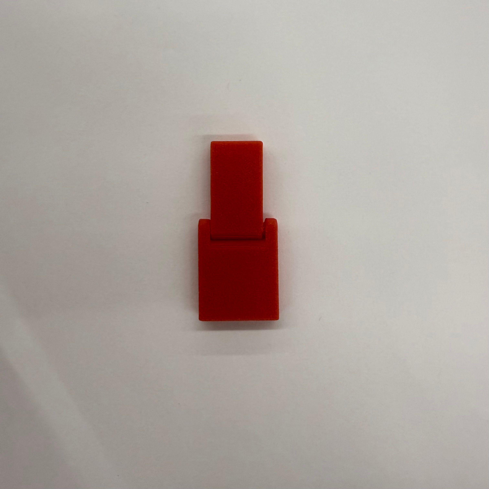
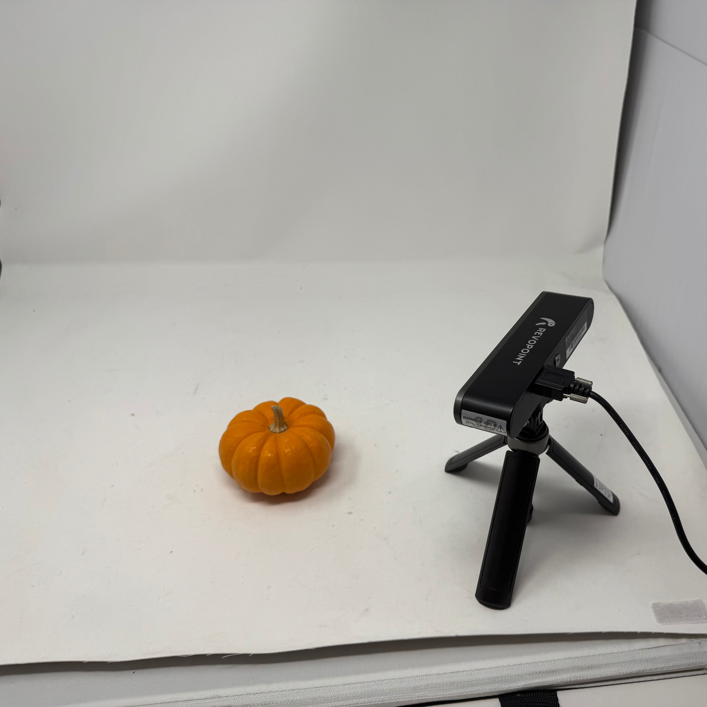
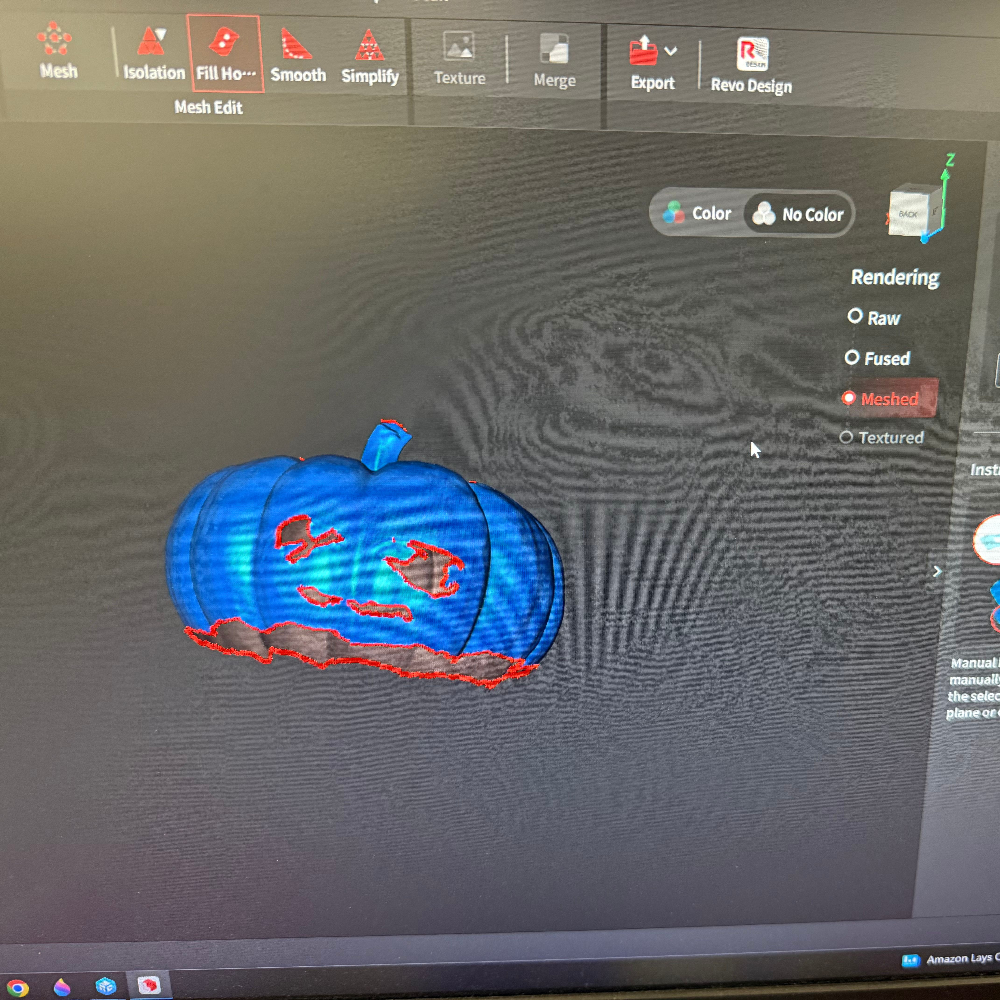
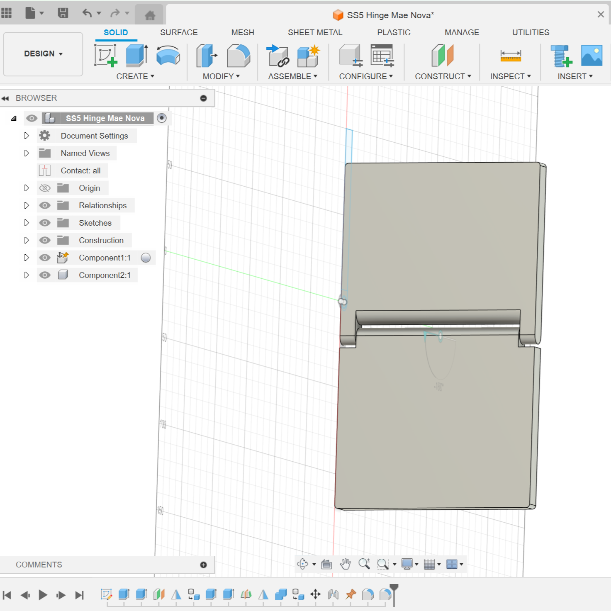
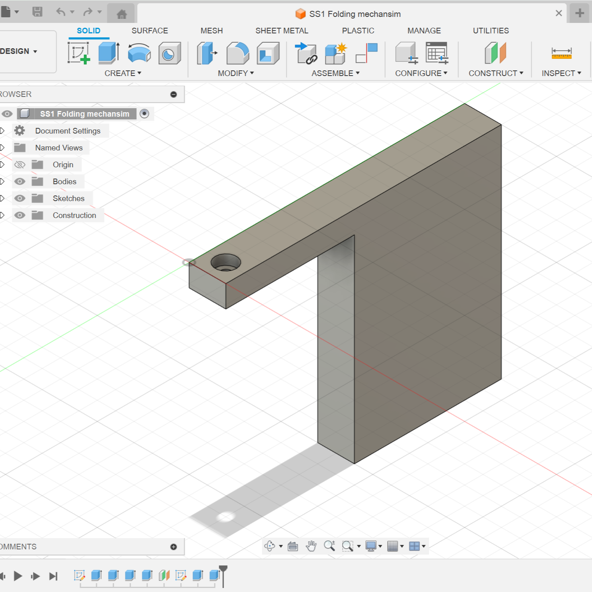

<div class="textcontainer"> <p class="margin"> </p> <h3>Week 5: 3D Design & Printing</h3> <h4>Assignment: Model and 3D print something</h4> <p class = "margin"></p> <h4>Designing and 3D printing</h4> For my final project, I need a hinge to fold a piece of paper. For this week’s 3D printing assignment, I decided to design and print the hinge. I followed a <a href="https://www.youtube.com/watch?v=w1o48laHAos">YouTube tutorial</a> to create the hinge mechanism. <p class = "margin"></p> <a download href='./Hinge_STL.stl'>Download my STL file </a> <p class = "margin"></p> <a download href='./Hinge_f3d.f3d'>Download my f3z file </a> <p class = "margin"></p> <a download href='./Hinge_gcode.gcode'>Download my gcode file </a> <p class = "margin"></p> This is a picture of the hinge <p class = "margin"></p>  <p class = "margin"></p> This is a video of the hinge in motion <p class = "margin"></p> <video width="360" height="640" autoplay muted> <source src="hinge_vid.mp4" type="video/mp4"> Your browser does not support the video tag. </video> <p class = "margin"></p> <h4>Scanning</h4> For the scanning assignment I scanned this mini pumpkin I found in the lab with droopy eyes on it. <p class = "margin"></p> <video width="640" height="360" autoplay muted> <source src="pumpkin.mp4" type="video/mp4"> Your browser does not support the video tag. </video> <p class = "margin"></p> I used the Revpoint scanner to take the scan. <p class = "margin"></p>  <p class = "margin"></p> Once the scan was complete, I used the fusion and fill hole tools to make sure I got a good result. <p class = "margin"></p>  <p class = "margin"></p> This is how the final scan looks like: <p class = "margin"></p> <video width="640" height="360" autoplay muted> <source src="pumpkin_scan.mp4" type="video/mp4"> Your browser does not support the video tag. </video> <p class = "margin"></p> <h4>3. Updates on my final project</h4> <p class = "margin"></p> <h4>Material Bill</h4> <ul> <li>Housing: Cardboard or plywood for the main structure</li> <li>Input Device: Push button that activates the servo motors when pressed</li> <li>Output Devices: Three 996 Servo All-Metal motors <ul> <li>One motor to control the hinge</li> <li>One motor to hold the paper down and reset the hinge</li> <li>One motor to move the piece of paper</li> </ul> </li> <li>Microcontroller: ESP32 Dev Board or any compatible microcontroller</li> <li>Wiring: Jumper wires and connectors for circuit connections</li> <li>3D Printing Material: Filament for printing the hinge and mounts</li> </ul> I began by exploring how to build a folding hinge. I followed a <a href="https://www.youtube.com/watch?v=w1o48laHAos">YouTube tutorial</a> to 3D print a hinge mechanism because standard metal hinges have a raised middle section that prevents clean folds. <p class = "margin"></p> <h4>Timeline</h4> <ul> <li>Week 6: Finalize hinge design, test different servo mounts, and check compatibility with various servo motors</li> <li>Week 7: Build the MVP that folds a piece of paper</li> <li>Week 8: Refine and improve the MVP design</li> <li>Week 9: Develop the mechanism for holding the paper down and resetting the hinge</li> <li>Week 10: Create the mechanism to move the paper (using kinetic design to convert rotational motion into linear motion)</li> <li>Weeks 11–13: Test all mechanisms, fix issues, and enhance the project for final presentation</li> </ul> <p class = "margin"></p> <h4>3D Model of the Project</h4> Here is the 3D model of the hinge and the servo mount for my project. The rest of the housing structure will be laser cut so the hinge and the servo motor can be mounted securely on top. <p class = "margin"></p>  <p class = "margin"></p> <p class = "margin"></p>  <p class = "margin"></p> </div>